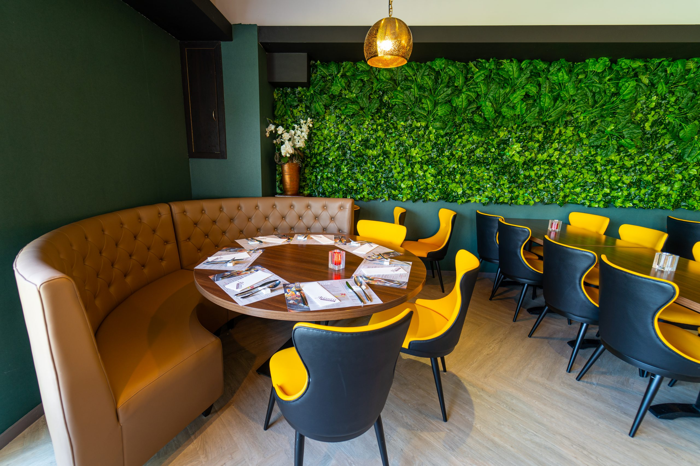
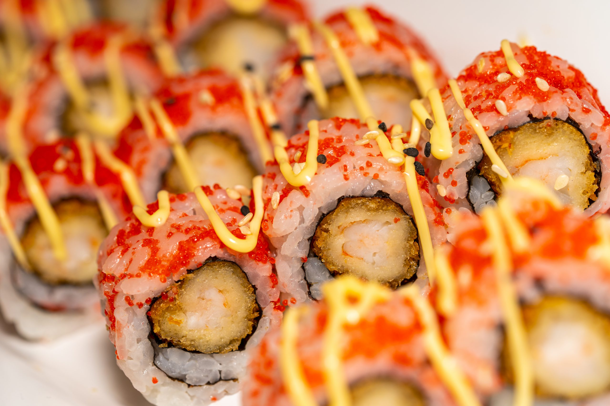
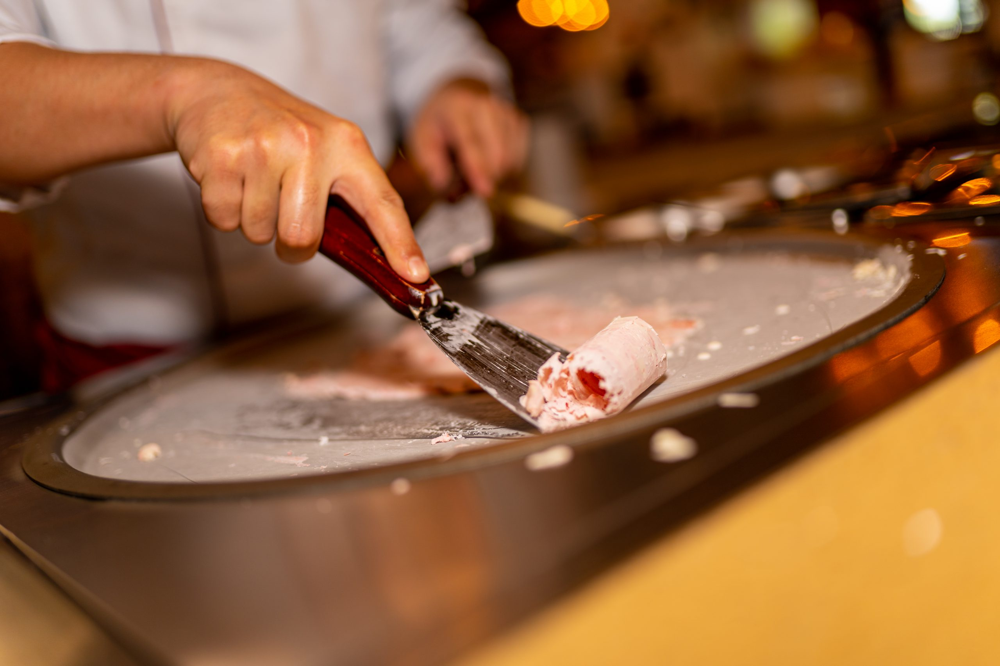
 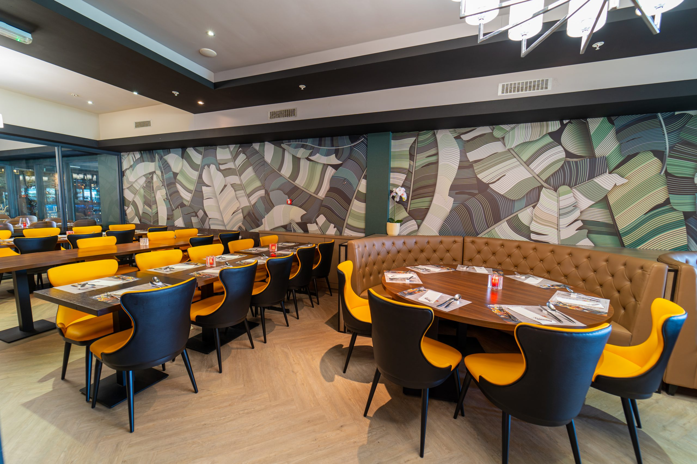
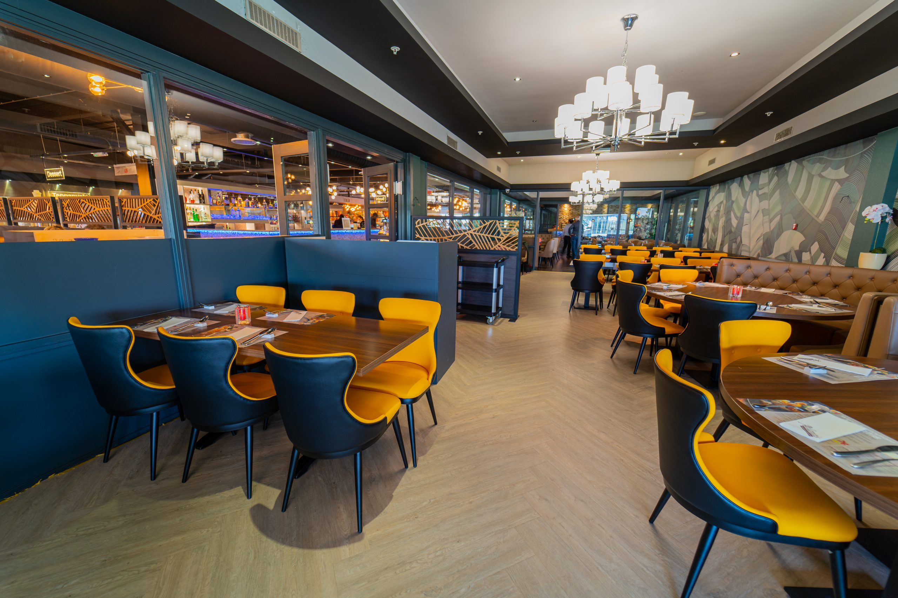
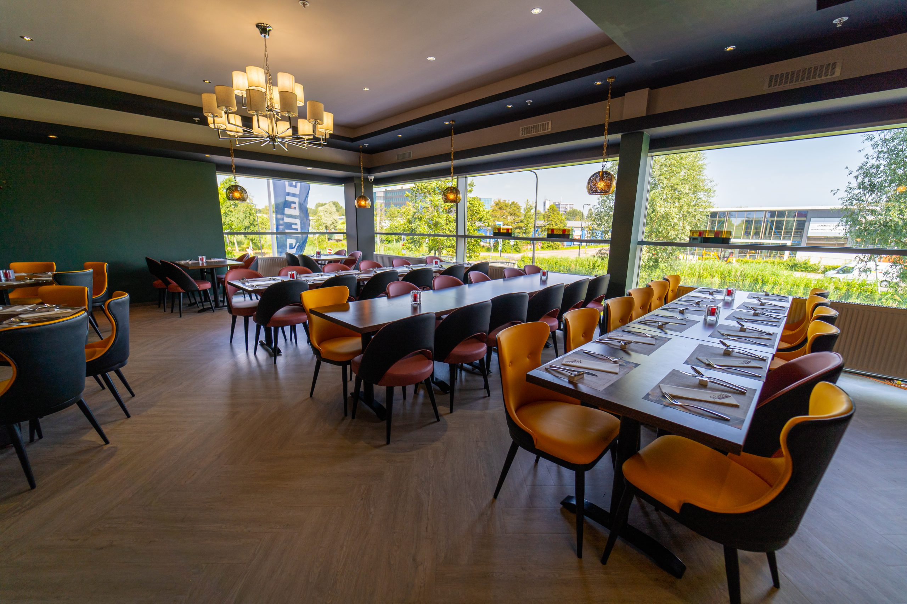
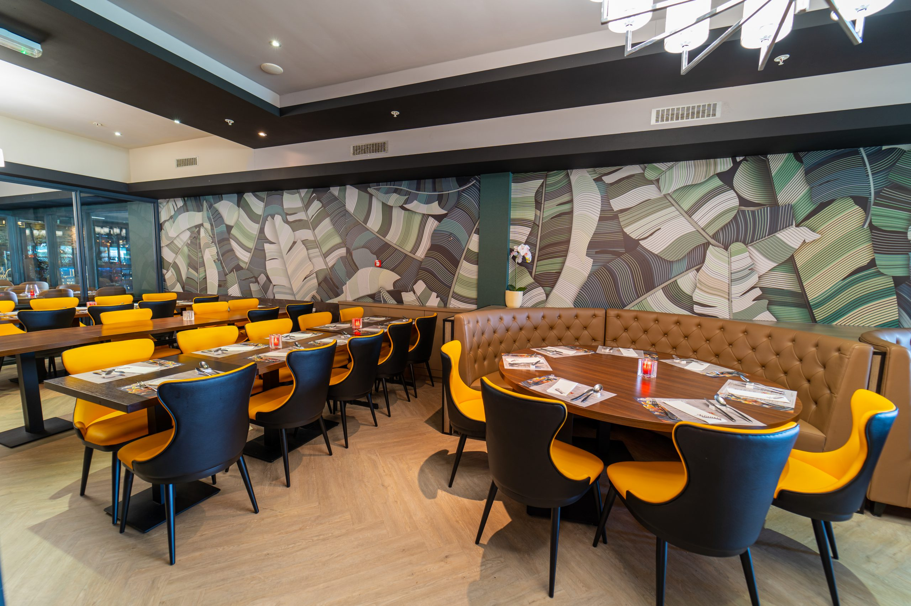
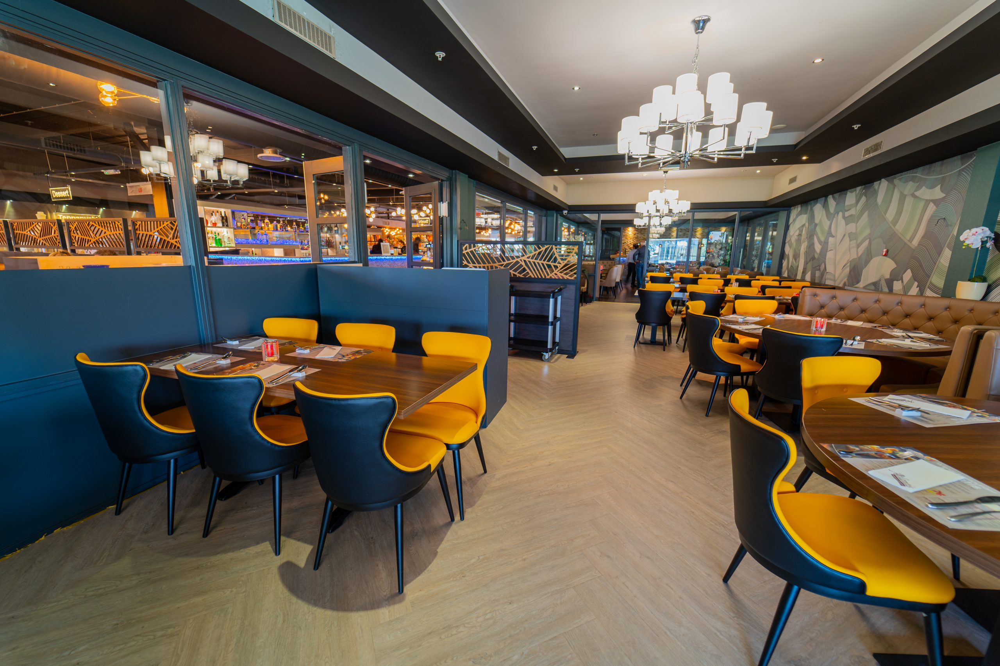
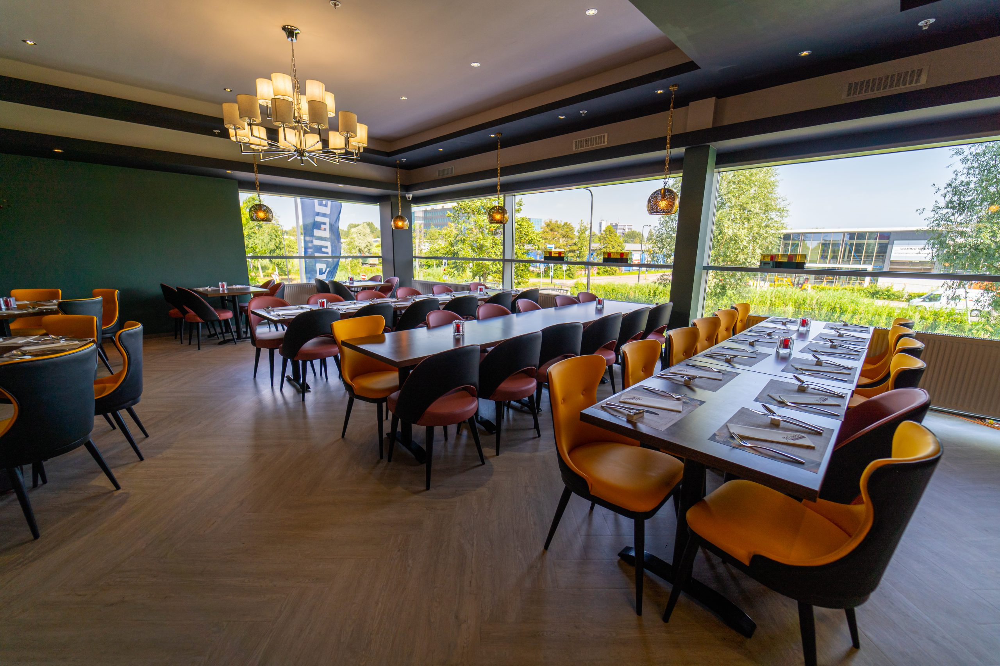
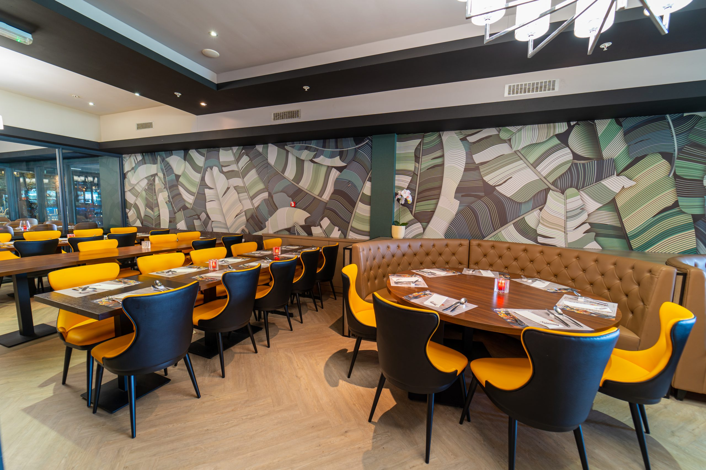
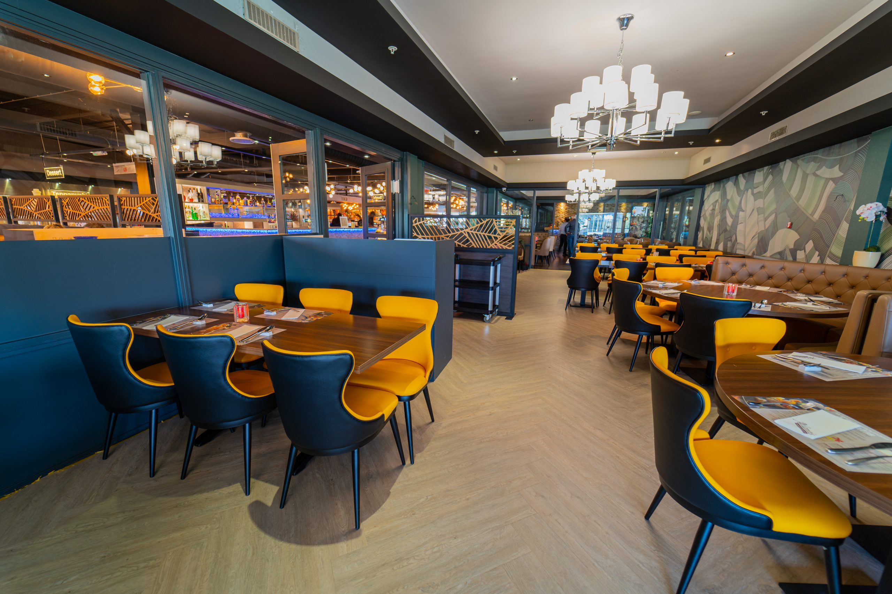
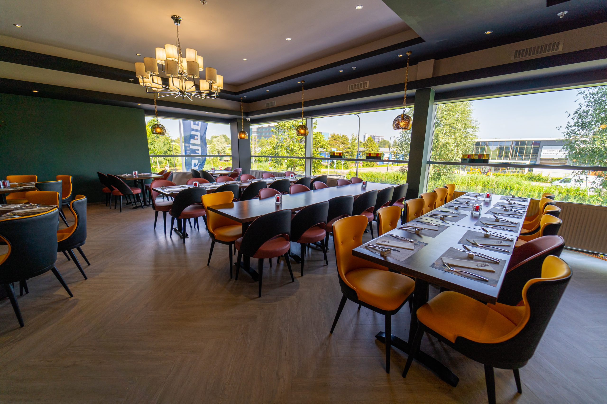
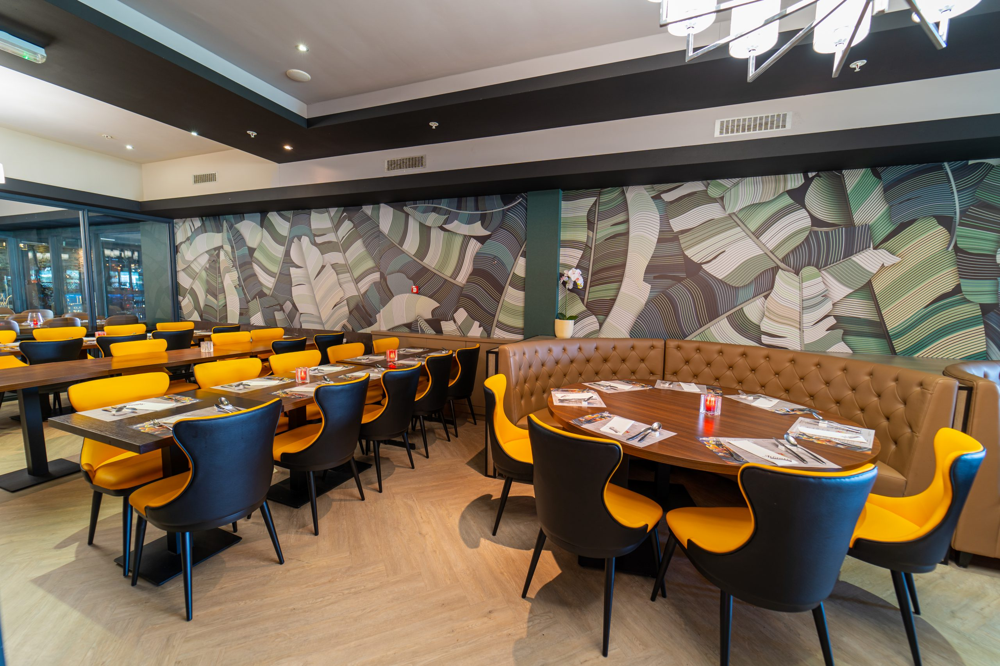
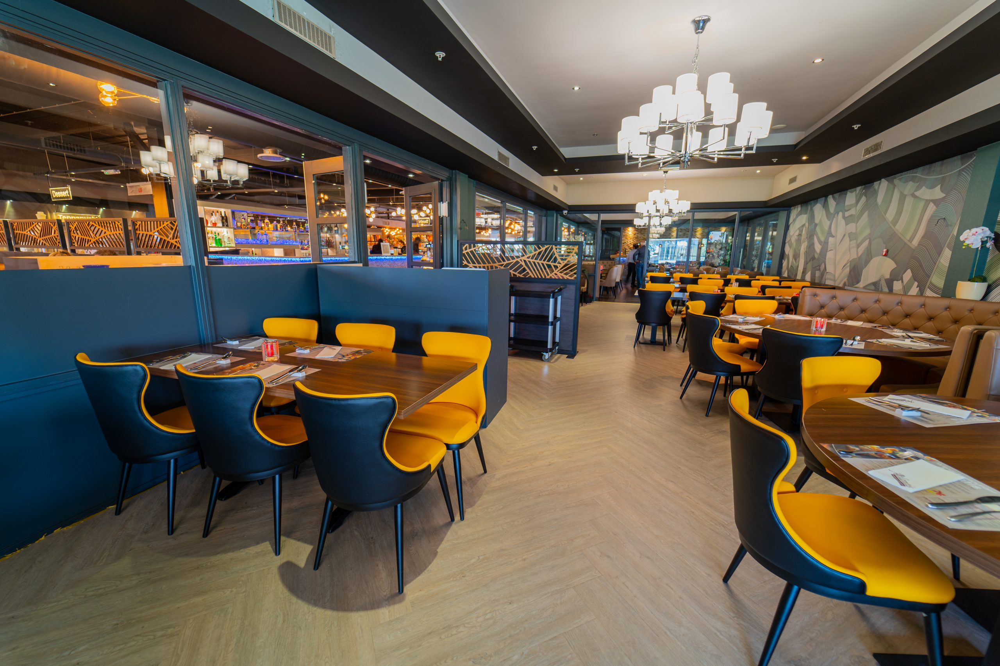
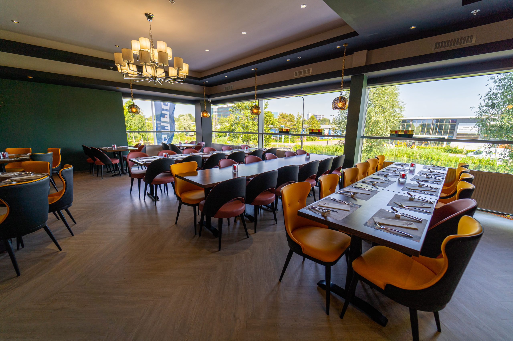

De legende van Atlantis is ontstaan door de verhalen van Plato. Het mythische eiland was het aardse paradijs voor de halfgoden. De verloren stad is nu terug als Restaurant Wereld Atlantis. Restaurant Wereld Atlantis, één van de grootste wereldkeukens van Nederland, presenteert onbeperkt All-in-Dinner, genieten voor een vast bedrag inclusief frisdrank, koffie & thee en luxe desserts.

U kunt de smaken uit zowat alle culturen proeven in slechts één avond, met gerechten uit China, Japan, Italië, Frankrijk, Nederland en Zuid-Amerika. Met All-in-Dinner betaalt u niet voor het eten, maar voor de tijdsduur van uw verblijf. U betaalt vooraf het door u aangegeven arrangement voor 2,5 of 3 uur onbeperkt eten en drinken.
Of u nu wilt genieten van onze teppanyaki, wok of buffet. Al het eten is inbegrepen. Alle frisdranken, koffie & thee en luxe desserts zijn bij het arrangement ook inbegrepen. Loop gerust meerdere malen rond en geniet van al het lekkers wat u tegen komt. Als u klaar bent met eten en u wilt Wereld Atlantis verlaten, vergeet niet uw bon mee te nemen. Hiermee checkt u bij de receptie uit, zodat wij kunnen zien dat de tafel weer vrij is. Zo simpel is het!
0182 – 573 693
info@atlantisgouda.nl
Elburgplein 3A
2803 PX
Gouda
7 dagen per week
MA-VR: 17:00 - 22:00
ZA: 16:00 - 22:00
ZO: 16:30 - 22:00